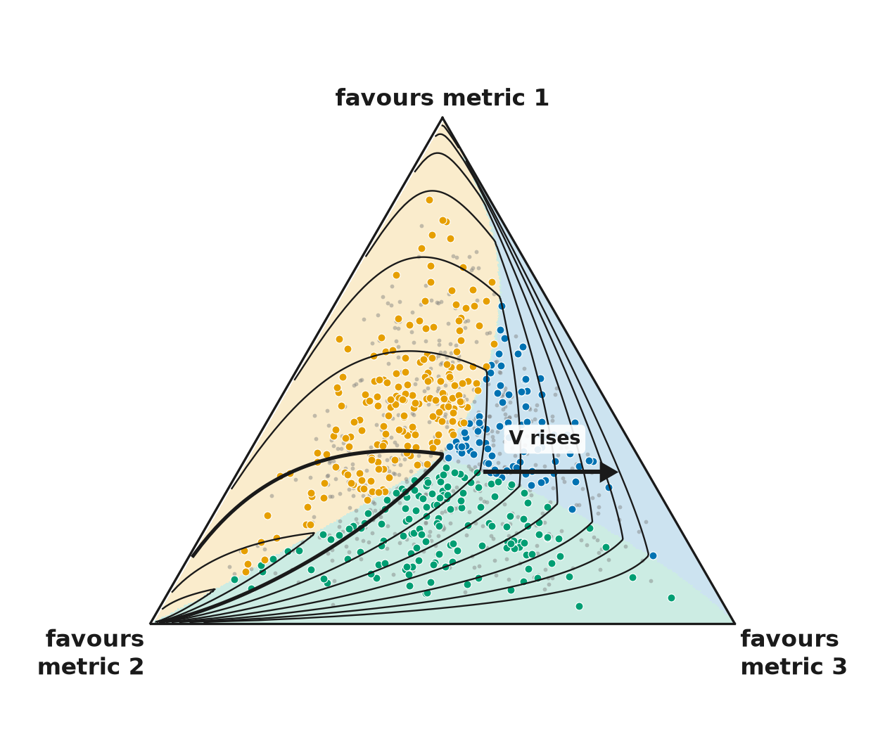
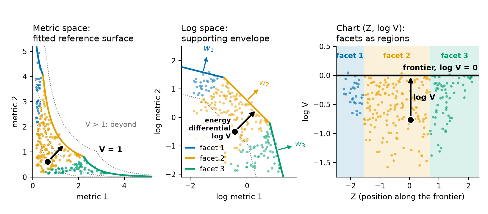
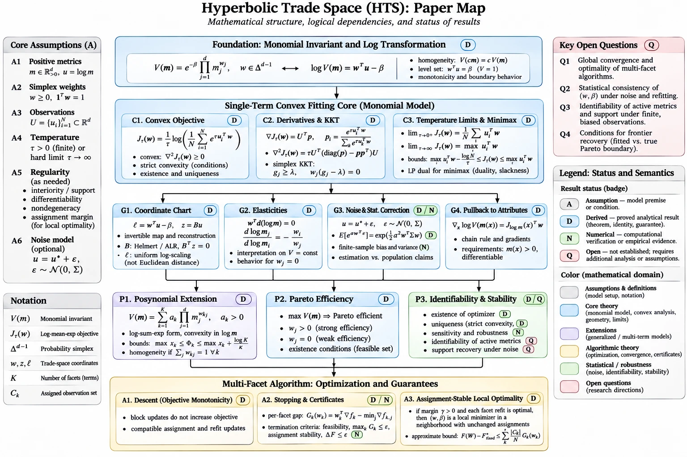

hyperbolic-trade-space
Posynomial invariant form: the shape of a design trade space, learned from evaluated designs
Why
Trade studies are usually decided from documents and tables, where the detail of the evaluated designs is lost, and the alternatives are bespoke or opaque. A model-based method has to clear a bar before a decision-maker can trust it: it has to show its reasoning, say where the data do not reach, and let the analysis be rerun.

What
PCA explains variance; this explains tensions. Its unit is the n-lemma, a power-weighted
product of the metrics that names which of them compete on one part of the trade space. The
method belongs in unsupervised learning and feature engineering beside PCA: kin rather than a
substitute, and the two chain (the tension report already runs PCA on the near-frontier chart
coordinates). It ships as a scikit-learn-compatible estimator (fit,
transform, inverse_transform, score_samples; the
conformance checks pass), so it drops into the same workflows.

How

Read the map from the top. The foundation box is the invariant form: a weighted geometric mean V of the metrics, whose level V = 1 is the fitted reference surface and whose logarithm is the energy differential. The single-term core fits the weights and an offset to your designs as one convex problem. Four boxes use that fit: the chart (each design becomes a position along the frontier and a log V), the exchange rates between the metrics that contend, the correction for noise, and the pull-back to your raw attributes. The lower boxes extend the model to several facets, relate it to the Pareto boundary, and give the multi-facet algorithm its guarantees. Each box carries a badge, derived, checked numerically or open; the red box lists the open questions.
The paper tells the method, the documentation shows how to use the package task by task, and the package is the tool you run on your own data. Start wherever suits you.
-
Paper
The method told from evaluated designs to the frontier, its tensions and its gaps.
Read the paper → -
Documentation
For a user of the package: a first fit, a guide per task from conditioning your attributes to reading a tension report, the API reference, a spacecraft example, the model in brief and a glossary.
Open the docs → -
Package
A scikit-learn-compatible estimator for the frontier, with an invertible log-ratio chart, tension reports and plotting helpers. Install from source:
API reference →pip install git+https://github.com/DynamicalSystemsGroup/ hyperbolic-trade-space.git